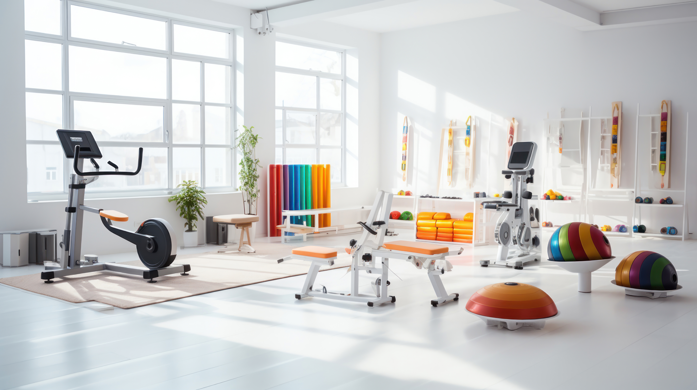

Sua saúde em movimento!
Cuidando do seu corpo, recuperando sua qualidade de vida.
Faça já o seu agendamento conosco, tudo de forma online!
Sobre nós:
Missão: Promover saúde, autonomia e qualidade de vida na terceira idade por meio de um atendimento fisioterapêutico humanizado, seguro e personalizado, respeitando os limites e valorizando a trajetória de cada pessoa idosa.
Somos uma clínica de fisioterapia especializada no cuidado com a saúde e a mobilidade de pessoas idosas. Aqui, entendemos que cada fase da vida exige atenção especial — e é por isso que oferecemos um atendimento humanizado, respeitoso e focado na autonomia e no bem-estar na melhor idade.
Com uma equipe experiente e dedicada, nossa missão é ajudar cada paciente a recuperar sua funcionalidade, mantendo a independência nas atividades do dia a dia e proporcionando mais confiança em seus movimentos.
Mais do que uma clínica, somos parceiros de vida. Acreditamos que envelhecer bem é viver com dignidade, movimento e alegria — e é isso que nos motiva a cuidar de quem já cuidou tanto.
Nossos serviços:
- Fisioterapia Geriátrica
- Fisioterapia Neurofuncional
- Fisioterapia Traumato-Ortopédica
- Hidroterapia
- Terapia manual para as dores e alterações posturais


Blog
Artigos relevantes
Vídeos de alguns exemplos de tratamento
A clínica

Depoimentos dos pacientes e familiares
Depoimento de Maria, 72 anos:
"Depois de uma queda que me deixou com medo de sair de casa, encontrei a Clínica RM. Em poucas semanas, recuperei minha confiança e hoje caminho sem dor. A equipe é paciente e dedicada - nunca me senti tão bem cuidada!"
Depoimento de João, 68 anos (filho de Dona Clara, 89 anos):
"Minha mãe sofria com dores crônicas nas costas e estava perdendo a mobilidade. Graças aos exercícios personalizados e ao carinho da equipe, ela voltou a fazer suas atividades diárias sozinha. Ver ela independente de novo não tem preço!"
Depoimento de Dona Antônia, 78 anos:
"Tenho artrose nos joelhos há anos e achava que nunca mais iria andar direito. A Clínica RM mudou minha vida! Com hidroterapia e fortalecimento, hoje consigo brincar com meus netos sem limitações. Sou eternamente grata!"